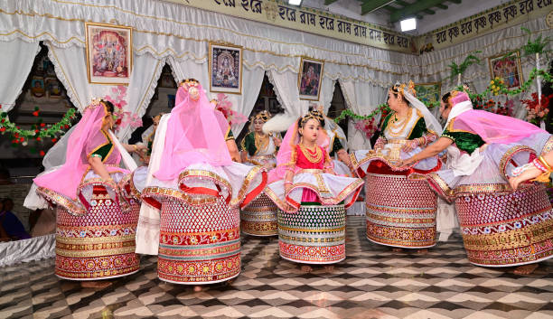

Khamba Thoibi is a duet dance performed by a male and female dancer, depicting the legendary love story of Khamba and Thoibi from the Moirang region.The dance is characterized by its elegant and expressive movements, symbolizing love and devotion.

Ras Lila is the classical dance of Manipur, depicting the love story of Radha and Krishna. It is performed during festivals and religious occasions.The dance is characterized by its grace, fluid movements, and expressions of devotion. Performers wear traditional costumes, including elaborate jewelry and beautifully designed skirts (Lai-Ningthou).